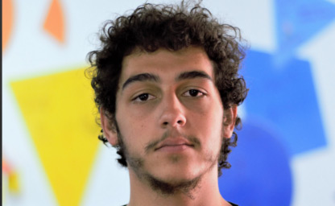
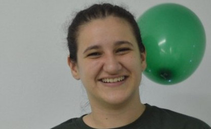
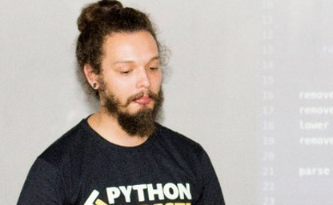
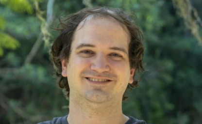

Thaíssa Falbo
Usando o Flask Admin com Segurança e Flexibilidade
Carioca morando em São Paulo que não dispensa o catchup na pizza! Já passou por vários cenários do desenvolvimento de software, da Infraestrutura ao Front-End. Atualmente trabalha como Desenvolvedora Full-Stack na Udacity.

Felipe Mocruha Alcantara
Desenvolvimento de Aplicações web com Flask e Docker
Desenvolvedor na Raccoon. Tem interesse em linguagens de programação e sistemas distribuídos.

Talita Rossari
API REST: O Começo - Uma introdução a REST para iniciantes
Co-organizadora do Pyladies Floripa; QUASE graduada em Análise e Desenvolvimento de Sistemas; Atualmente Desenvolvedora Back-end na Agrosatélite.
João Lugão
API REST em Flask + Vue.js
Aplicações modernas com separação entre frontend e backend
Desenvolvedor Python e Javascript que gosta de usar essas tecnologias para prototipagem rápida de soluções web modernas e reativas na Flowcap.net.

Eduardo Mendes
Escrevendo Testes com Flask e #JustPython
Padawan dos live codes, apto fazedor de lambdas, apaixonado por ciência e software livre e host da Live de Python no Youtube.
Danilo Bellini
Introdução ao Sanic - O Flask assíncrono
Engenheiro eletricista, bacharel em música e mestre em ciência da computação (USP). Trabalhou com processamento de sinais, estatística e desenvolvimento de software para Fuvest, Playax, Jeitto, SCCON, IDwall, Ahnex e SciELO. Sócio da HexD Tech.

Iuri de Silvio
Flask Profiling
Técnicas para identificação de pontos críticos de performance
Engenheiro de Computação pelo ITA. 10 anos de Python, trabalha com Flask desde 2011. CTO na Pricez por 6 anos. Especialista em desempenho de aplicações e servidores.
Eduardo Pereira
Inteligência Artificial, Flask e Raspberry Pi.
Mestre e Doutor em Astrofísica pelo INPE e Astronomia Computacional pela USP. Prof de Ciências da Computação na Faculdade Anhanguera, e Tutor de física na UNIVESP, também é autor do livro "Trilhas Python: Programação multiparadigma e desenvolvimento web com Flask!"
Luiz Lima
Flask + PWA - Mobile Applications com Flask
Técnico eletrônico e futuro engenheiro, usa tecnologia para transformar devaneios em realidade, solucionando problemas e se divertindo no processo.